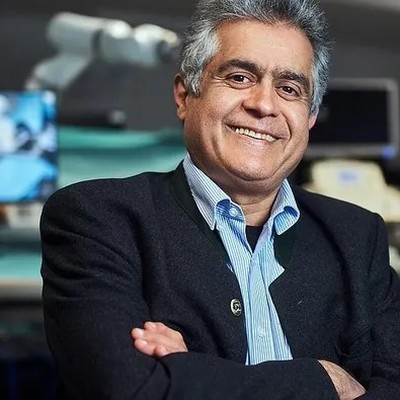
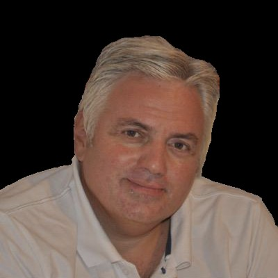
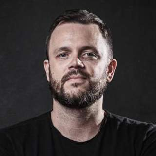

MICCAI 2026 Workshop
EndoLINA
The International Workshop on
Endoluminal Intervention Navigation and Autonomy
September 27, 2026
Strasbourg Convention Centre, France
Half-day Workshop
The International Workshop on
Endoluminal Intervention Navigation and Autonomy
EndoLINA is a MICCAI workshop on endoluminal intervention navigation and autonomy with a deliberate focus on medical image computing (MIC) and computer-assisted intervention (CAI). Endoluminal procedures (e.g., bronchoscopy, colonoscopy, upper-GI endoscopy, ureteroscopy) operate in tortuous, deformable lumens with limited field-of-view and frequent visual degradation from motion, fluid/occlusion, specularities, and device/illumination artifacts. These conditions make navigation primarily an imaging-and-AI challenge: robust perception, multimodal fusion, uncertainty estimation, and clinically meaningful evaluation.
The workshop will highlight methods that connect pre-/intra-operative imaging to navigation decisions, covering anatomy-aware navigation representations, artifact-resilient visual localization, multimodal fusion and registration, uncertainty-aware decision-making, and benchmarks aligned with clinical workflows. The half-day format combines in-person keynotes, contributed talks, posters, and a panel to consolidate open problems and propose community benchmarks for trustworthy endoluminal navigation and autonomy.
EndoLINA is jointly organized with the ATM26 Challenge (Airway Tree Modeling), which involves both preoperative planning and intra-operative navigation for endobronchial intervention.
Anatomy- and topology-aware navigation representations and patient-specific map building from CT/MRI.
Artifact-resilient scope pose estimation from endoscopic video, including self- and weakly-supervised learning and domain generalization across devices/sites.
Fusion and registration of CT/MRI with real-time endoscopy (and fluorescence/US when applicable) for path planning and guidance.
Long-horizon navigation with risk-aware policies and human-in-the-loop shared autonomy framed as CAI.
Metrics aligned with clinical workflow: target reachability, localization error, time-to-target, robustness to artifacts, failure prediction, and calibration.
Applications in bronchoscopy, colonoscopy, upper-GI endoscopy, ureteroscopy, and other endoluminal interventions.
All deadlines are at 23:59 Pacific Time (PT)
June 15, 2026
July 15, 2026
July 22, 2026
September 27, 2026
Half-day schedule (200 minutes)
| Time | Event |
|---|---|
| First Part (90 min) | |
| 08:00 - 08:05 | Opening & Scope Framing |
| 08:05 - 08:25 | Keynote 1 — Prof. Nassir Navab (Technical Expert) |
| 08:25 - 08:45 | Keynote 2 — Prof. Alberto Arezzo (Clinical Expert) |
| 08:45 - 09:30 | Contributed Oral Session (3 presentations, 15 min each) |
| 09:30 - 09:50 | Break & Poster Session |
| Second Part (90 min) | |
| 09:50 - 10:05 | ATM26 Challenge Overview |
| 10:05 - 10:50 | ATM26 Top-3 Team Presentations (15 min each) |
| 10:50 - 11:10 | Panel: "Benchmarks, Uncertainty, and Trustworthy Endoluminal CAI" |
| 11:10 - 11:20 | Closing & Next-step Roadmap |
Confirmed in-person speakers


Additional keynote speakers from medical image computing, multimodal fusion/registration, and CAI with clinical deployment experience will be announced.
We invite high-quality original submissions that address challenges in endoluminal intervention navigation and autonomy. Topics include but are not limited to:
Papers should be formatted in LNCS style (Springer) and limited to 8 pages (plus references). Supplementary material may be submitted optionally. All submissions will undergo double-blind peer review with at least two reviewers per paper.
Accepted papers will be published in the MICCAI Satellite Events joint LNCS proceedings (Springer Nature). Top papers will be invited to submit extended versions to IEEE Transactions on Medical Robotics and Bionics and other related journals.
Accurate airway tree modeling is essential for pre-operative planning, bronchoscopic navigation, and peripheral nodule biopsy, helping to identify optimal access routes and reduce uncertainty. Building on ATM22 (Airway Tree Modeling), ATM26 extends the task from binary segmentation to structured airway understanding, featuring multiple tracks including airway segmentation under realistic CT conditions and branch-wise anatomical labeling. The challenge aims to advance airway modeling methods for endobronchial intervention and provide a realistic multi-task benchmark for the community.
ATM26 is part of the SENSAR network and organized in conjunction with MICCAI 2026. Registration and full details are available on the challenge platform.
University of Torino
Shanghai Jiao Tong University
MICCAI Fellow
Technische Universität München
MICCAI Fellow
Shanghai Jiao Tong University
Politecnico di Milano
Shanghai Jiao Tong University

University of Twente
For any inquiries regarding the workshop, paper submissions, or the SENSAR network launch, please contact:
Dr. Yun Gu
Shanghai Jiao Tong University
endoluminal.imr@gmail.com